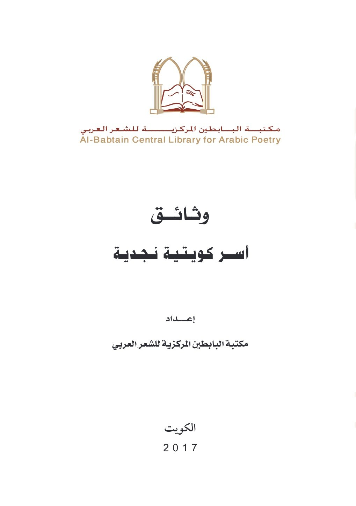
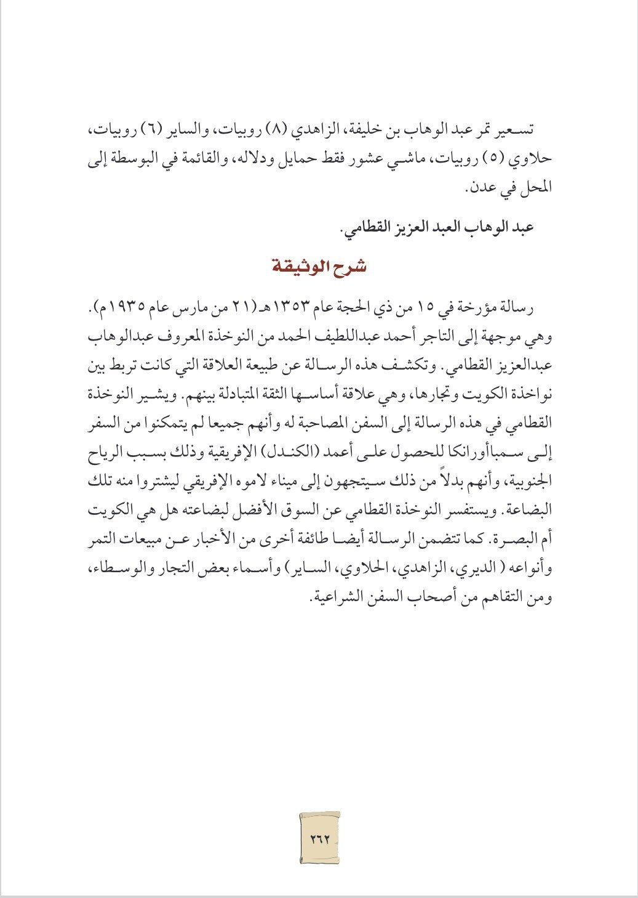

21 March 1935 · Book pages, Watha'iq Usar Kuwaitiya Najdiya, prepared by the Al-Babtain Central Library for Arabic Poetry, Kuwait, 2017, document 2
A letter from Nakhuda Abdulwahab Abdulaziz Al-Qatami to the merchant Ahmed Abdullatif Al-Hamad
What it is
A letter dated 15 Dhu Al-Hijja 1353 AH (21 March 1935) from the well known Nakhuda Abdulwahab Abdulaziz Al-Qatami to the merchant Ahmed Abdullatif Al-Hamad. He writes that the ships sailing with him could not reach Simba Uranga in Africa to load mangrove poles (chandal) because of the southerly winds, so they would go to the port of Lamu to buy them there instead. He asks whether Kuwait or Basra is the better market for his cargo, and gives news of date sales and prices (Al-Zahdi 8 rupees, Al-Sayer 6, Halawi 5), and of merchants, agents and the ship owners he met. He signs it «Abdulwahab Al-Abdulaziz Al-Qatami». The book explains that the letter shows the trust between Kuwait’s nakhudas and its merchants. The index on page 291 lists him under document 2.
Why it matters
A letter signed by Abdulwahab Abdulaziz Al-Qatami himself during an Africa voyage, with the book’s own explanation.
Page copies


Notes
Only the first pages are shown here. Family members who sign in can see all 3 pages.
Others named
Sources
Watha'iq Usar Kuwaitiya Najdiya, Al-Babtain Central Library for Arabic Poetry, Kuwait, 2017, document 2, page 262; index of names, page 291
How this text was made: Photographed from the printed pages.
Open in the interactive site